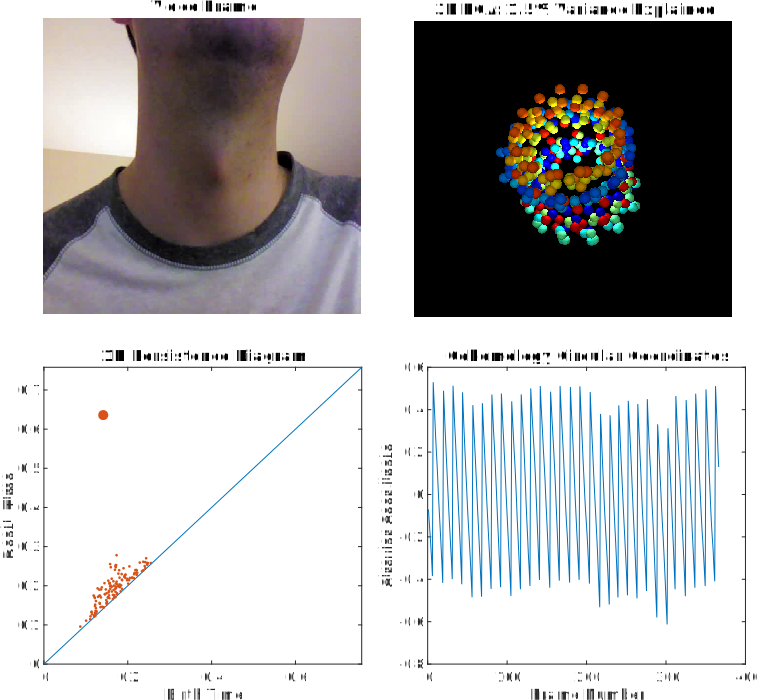

High Dimensional Geometry of Sliding Window
Embeddings of Periodic Videos
Chris Traliehttp://www.ctralie.com, chris.tralie@gmail.comDuke University, Department of Electrical and Computer EngineeringAbstractWe explore the high dimensional geometry of sliding windows of periodic videos. Under a reasonable model for periodic videos, we show that the sliding window is necessary to disambiguate all states within a period, and we show that a video embedding with a sliding window of an appropriate dimension lies on a topological loop along a hypertorus. This hypertorus has an independent ellipse for each harmonic of the motion. Natural motions with sharp transitions from foreground to background have many harmonics and are hence in higher dimensions, so linear subspace projections such as PCA do not accurately summarize the geometry of these videos. Noting this, we invoke tools from topological data analysis and cohomology to parameterize motions in high dimensions with circular coordinates after the embeddings. We show applications to videos in which there is obvious periodic motion and to videos in which the motion is hidden. |

Chris Tralie was supported under an NSF Graduate Fellowship NSF DGF 1106401 and the US Air Force Research
Laboratory Visiting Faculty Program
Matt Berger is thanked for help making sliding window videos more efficient
Alex Hallden-Abberton is thanked for video editing assistance